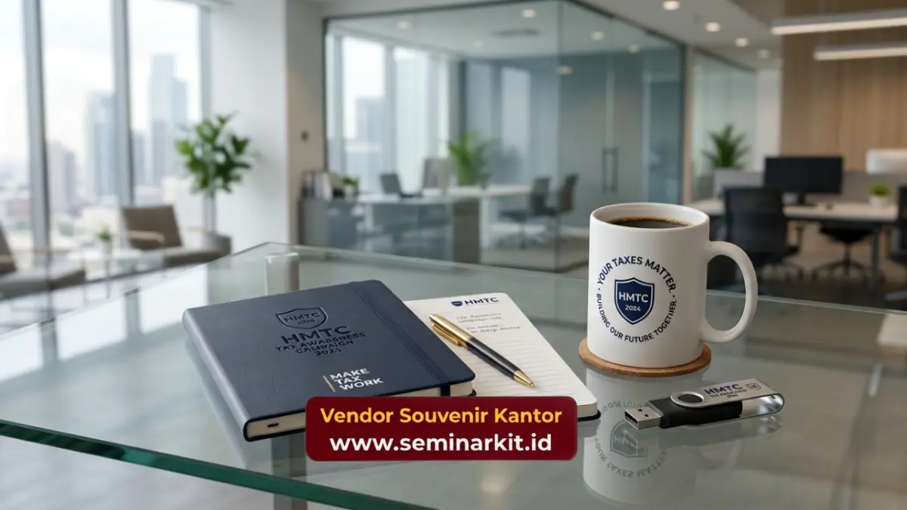

Paket seminar kit korporat Jakarta dapat disusun berdasarkan jumlah peserta, budget, jenis event, kebutuhan branding, dan jadwal distribusi perusahaan.
- Paket hemat tetap dapat terlihat profesional dengan item fungsional.
- Notebook, tas seminar, dan tumbler dapat menjadi produk utama.
- MOQ dan lead time perlu dikonfirmasi sebelum produksi.
- Distribusi multi drop membutuhkan data alamat dan PIC yang jelas.
Bagaimana Menyusun Paket Seminar Kit dengan Budget Terbatas?
Paket hemat tetap dapat terlihat profesional jika perusahaan memprioritaskan barang yang benar-benar digunakan peserta dan menjaga konsistensi branding.
Komponen yang dapat menjadi dasar paket antara lain:
- Notebook branded.
- Pulpen.
- Tas seminar atau goodie bag.
- Materi acara.
- Kartu informasi.
- Tumbler sebagai tambahan untuk paket dengan anggaran lebih besar.
Daripada menambah terlalu banyak item, perusahaan dapat memilih lebih sedikit produk dengan fungsi jelas. Pendekatan tersebut membuat anggaran lebih mudah dikendalikan.
Produk Apa yang Paling Efisien untuk Event Korporat?
Notebook, tas seminar, dan tumbler termasuk kategori merchandise yang mudah dikaitkan dengan aktivitas peserta selama dan setelah acara.
Notebook digunakan untuk mencatat materi. Tas membantu membawa perlengkapan. Tumbler dapat digunakan dalam aktivitas harian sehingga memiliki fungsi lebih panjang dibanding merchandise yang hanya dipakai saat acara.
Untuk event dengan peserta dalam jumlah besar, kombinasi notebook, pulpen, dan tas dapat menjadi struktur paket yang sederhana. Untuk peserta VIP, komposisi dapat dinaikkan menggunakan material dan kemasan yang lebih premium.
Bagaimana Menyesuaikan Jumlah Produksi dengan Peserta?
Jumlah produksi sebaiknya mempertimbangkan jumlah peserta terdaftar, kebutuhan cadangan, dan ketentuan MOQ dari produk yang dipilih.
MOQ atau minimum order quantity perlu dikonfirmasi sebelum produksi karena setiap jenis produk dapat mempunyai batas minimum berbeda.
Untuk pengadaan korporat, panitia juga perlu membedakan antara jumlah peserta, jumlah paket, dan jumlah titik distribusi. Ketiganya tidak selalu memiliki angka yang sama.
Bagaimana Mengatur Lead Time dan Pengiriman?
Lead time harus dihitung dari proses desain sampai barang tiba di lokasi yang ditentukan, bukan hanya berdasarkan waktu produksi.
Urutan yang lebih aman adalah:
Brief produk -> desain branding -> persetujuan -> produksi -> quality control -> packing -> pengiriman -> penerimaan.
Seminarkit ID dapat menyesuaikan proses tersebut berdasarkan tanggal event dan kebutuhan jumlah paket.
Melayani pemesanan souvenir dan seminar kit untuk kebutuhan perusahaan di Jakarta memungkinkan pengadaan disiapkan berdasarkan tujuan pengiriman dan jadwal event.
Mengapa Distribusi Multi Drop Perlu Direncanakan?
Distribusi multi drop diperlukan ketika paket seminar kit dikirim ke lebih dari satu kantor, venue, atau titik kegiatan.
Informasi yang sebaiknya disiapkan meliputi:
- Nama penerima.
- Nomor kontak.
- Alamat lengkap.
- Jumlah paket.
- Jadwal penerimaan.
- Keterangan venue.
BPS mencatat terdapat 59.908 perusahaan industri mikro dan 11.142 perusahaan industri kecil di DKI Jakarta pada 2024. Data tersebut memperlihatkan besarnya aktivitas usaha di wilayah tersebut dan relevansi kebutuhan pengadaan barang pendukung kegiatan bisnis.

Bagaimana Memulai Pemesanan Paket Seminar Kit?
Perusahaan cukup menyiapkan jumlah pax, jenis acara, budget, produk yang diinginkan, logo, dan tanggal penggunaan.
Untuk kebutuhan yang masih fleksibel, paket dapat disusun dari beberapa tingkat spesifikasi sehingga panitia dapat membandingkan komposisi berdasarkan budget tanpa mengubah tujuan utama merchandise.
Informasi lebih luas mengenai perencanaan dapat dilanjutkan melalui panduan seminar kit korporat.
Pesan Paket Seminar Kit Korporat Jakarta di Seminarkit ID
Butuh paket seminar kit untuk meeting, training, seminar, konferensi, gathering, atau event perusahaan? Seminarkit ID melayani pemesanan dan pengiriman paket seminar kit korporat ke Jakarta dengan pilihan produk dan branding yang dapat disesuaikan.
Kirim jumlah peserta, kebutuhan item, tanggal event, dan budget kepada Seminarkit ID untuk mendapatkan rekomendasi paket yang sesuai kebutuhan perusahaan.

Banner promosi: klik gambar untuk langsung terhubung ke WhatsApp tim sales.